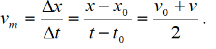
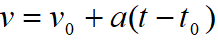
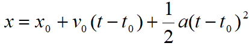
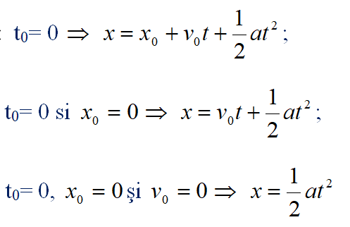

Legea mişcării (legea spaţiului):
Cum variaţia vitezei se face uniform, se poate considera că viteza medie este egală cu media vitezelor pe spaţiul analizat:

Substituind
 în relaţia anterioară,
rezultă legea spaţiului în mişcarea rectilinie uniform variată:

►
Condiţii iniţiale: Dacă:

Reprezentând grafic legea mişcarii x=f(t) obţinem un arc de parabolă.